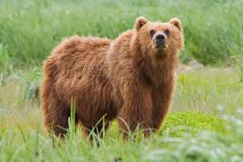

The brown bear(Ursus actors) is native to parts of northern Eurasia and North America. Its conservation status is currently "Least Concern." There are many subspecies within the brown brown bear species, including the Atlas bear and Himalayan brown bear.
Here are some more species:
The following countries have the largest populations of brown bears:
